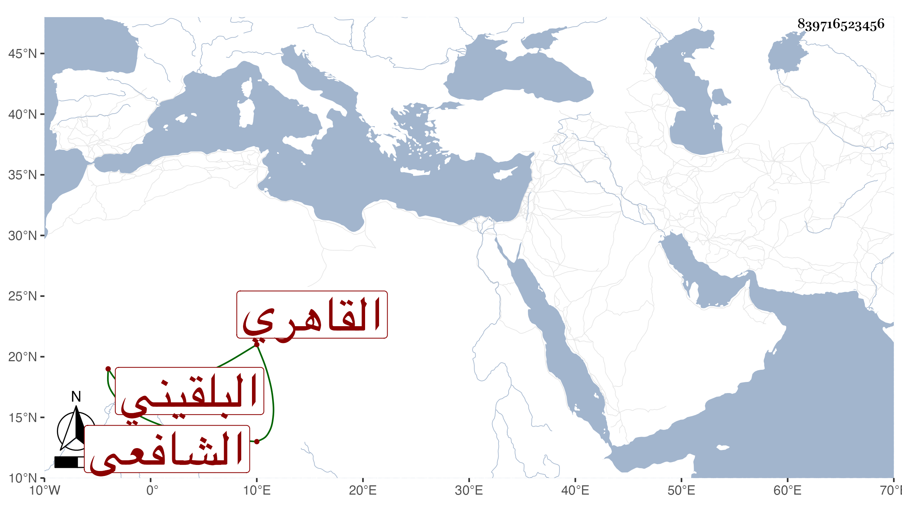

0902Sakhawi.DawLamic.ITO20230111-ara1.EIS1600.839716523456
Biography ID: 839716523456
19
أبو البقاء بن البلقيني البهاء محمد بن العلم صالح بن السراج عمر بن رسلان البلقيني القاهري الشافعي سبط الولوي محمد بن عبد الله البلقيني الماضي . ولد في سنة تسع عشرة وثمانمائة ونشأ في كنف أبيه فحفظ القرآن والعمدة والمنهاجين والشاطبيتين وألفية النحو وعرض على شيخنا والتفهني والبساطي والمحب بن نصر الله في آخرين وسمع على جماعة منهم شيخنا وأجاز له خلق وأخذ العربية والقطب وغيرهما عن التقي الحصني والفقه عن والده والشهاب المحلي والفرائض عن أبي الجود وطائفة ولكنه لم يمعن وناب عن أبيه وكان ذكيا فاضلا حسن العشرة متوددا أناب قبل موته بنحو عام حين اجتمع شمله بحفيدة عمه البدر . ومات في سابع عشر المحرم سنة ست وخمسين وتوجع له أبوه ودفنه بمدرستهم رحمه الله وإيانا .
